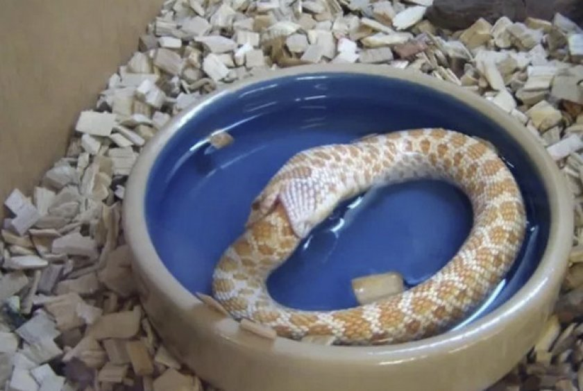
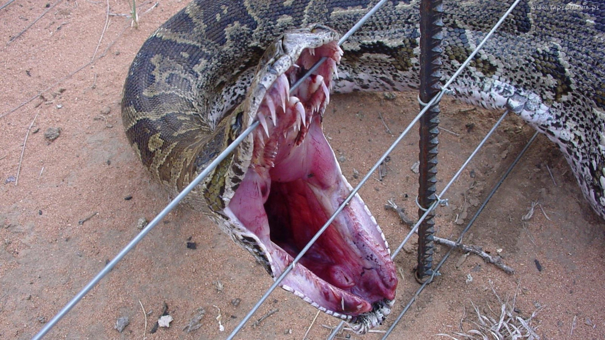
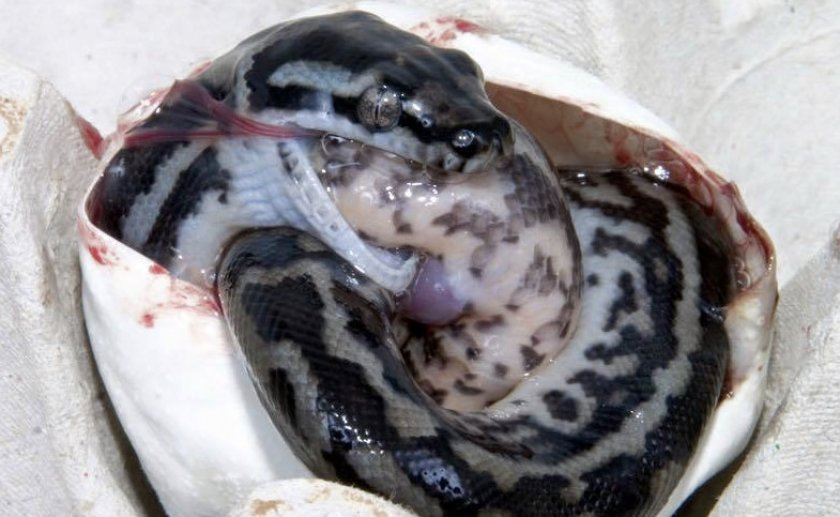
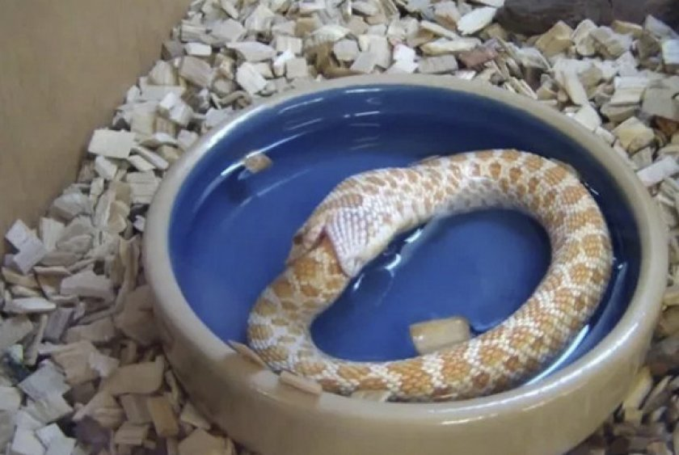
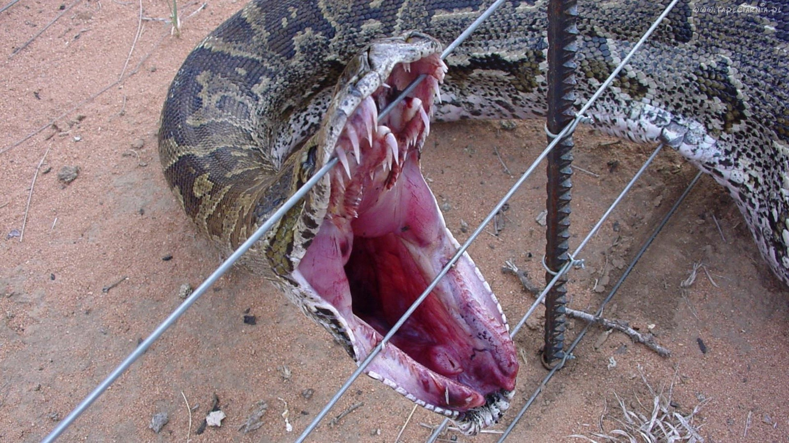
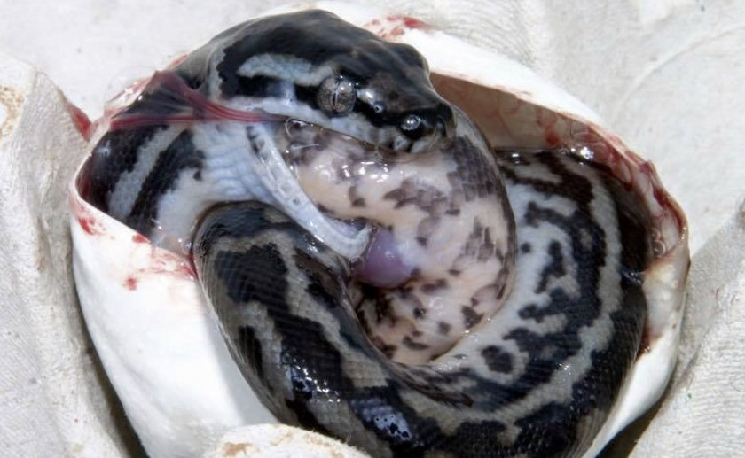

наши услуги
кормежка

купание
что-то
разведение
ето коты а не статуя и динозавр. Цитология-наука о клетках. Вирусология — раздел микробиологии, изучающий вирусы, их морфологию, физиологию, генетику, а также эволюцию вирусов и вопросы экологии. Медицинская и ветеринарная вирусология прежде всего рассматривают вирусы, поражающие человека и животных, изучает их роль в развитии инфекционных и онкологических заболеваний, определяет способы диагностики, терапии и профилактики вирусных заболеваний. Вследствие развития вирусологии были достигнуты определённые успехи в борьбе с некоторыми вирусными инфекциями. Например, в XX веке на земном шаре благодаря массовой вакцинации населения была ликвидирована оспа. Существует, однако, ряд вирусных заболеваний, неизлечимых на современном этапе развития науки, самое известное из них — ВИЧ-инфекция.
посмотреть| род | род | количество | пол | род | род | количество | пол |
|---|---|---|---|---|---|---|---|
| род | вид | количество | пол | род | род | количество | пол |
| аспид гамадриад | аспид гамадриад | 3ос | самец | аспид гамадриад | аспид гамадриад | 3ос | самец |
| аспид | свинорылый уж | 1шт | самец | аспид | свинорылый уж | 1шт | самец |
| ложноногие | тигровый питон | 789ос | самец | ложноногие | тигровый питон | 789ос | самец |
Оперативное вмешательство требуется в случаях болезней
наши услуги
кормежка
купание
что-то
разведение

30 октября пока боги спят пока боги спят пока боги спят пока боги спят (по новому стилю 11 ноября) 1821 года родился известнейший русский писатель – Ф. М. Достоевский. Детство Фёдора Михайловича Достоевского прошло в большой семье, которая принадлежала к дворянскому классу. Он был вторым из семи детей. Отец семейства – Михаил Андреевич Достоевский работал в больнице для малоимущих. Мать – Мария Фёдоровна Достоевская (девичья фамилия – Нечаева) происходила из купеческого рода. Когда Федору было 16 лет, внезапно умирает мать. Отец вынужден отправить старших сыновей в пансион К. Ф. Костомарова. С этого момента братья Михаил и Фёдор Достоевский поселяются в Санкт-Петербурге.
Оперативное вмешательство требуется в случаях болезней сердечно-сосудистой системы достаточно часто. Это происходит в случаях, если консервативное лечение становится неэффективным, а болезнь прогрессирует, либо, когда пациент обратился за помощью слишком поздно, когда помочь ему может только сердечно-сосудистая хирургия. К болезням, часто требующим вмешательства сердечно-сосудистойсмутное время, призрак свободы нв коне хирургии, относятся ишемическая болезнь сердца, инфаркт миокарда и атеросклероз. Болезни коронарных артерий чаще всего в сердечно-сосудистой хирургии решаются с помощью коронарного шунтирования. Шунт — это путь в обход безнадёжно суженного участка артерии. Другое распространенное направление кардиохирургии — удаления аневризмы. В результате ишемической болезни сердца иногда происходит разрыв рубца на месте перенесенного инфаркта миокарда. Нарушается целостность межжелудочной стенки и появляется пузыреобразное выпячивание — аневризма, которая и удаляется хирургическим путём. Важную роль играет сердечно-сосудистая хирургия в устранении врождённых патологий сердца и сосудов. Врождённые пороки сердца — тема сложная и не до конца изученная. Чтобы спасти жизнь детям с такими дефектами, приходится оперировать их буквально на родильном столе — ведь тут на счету каждая минута. Только в последнее время стабильно успешными можно назвать операции при неправильном расположении артерий у младенцев. Современная сердечно-сосудистая хирургия позволяет избавить от врожденных пороков сердца, в первые 6 месяцев жизни, в том числе применяя операцию по созданию новых сердечных протоков, снабженных клапанами (так называемых анастомозов). В случае таких заболеваний, как пороки сердца и ИБС, лучшим с косметической точки зрения (меньше рубец) является вмешательство на коронарных сосудах и клапанах через минимальный торакотомический разрез. Достаточно рутинной стала в отечественной сердечно-сосудистой хирургии и операция по замене сердечного клапана. Пациенту ставится новый клапан либо из биологического материала (такие клапаны из тканей бычьего сердца или сердца свиньи не отторгаются организмом, но быстро изнашиваются), либо механическое устройство, заменяющее сердечный клапан, которому нет сносу долгие годы, но которое обязывает своего носителя пить антикоагулянты — специальные препараты, препятствующие сворачиваемости крови. Современным способом замены клапанов сердца является операция через сосудистый доступ, с использованием техники катетеризации. Преимущественно для аортальных клапанов (трансаортальная имплантация клапанов сердца). Таким способом лечат приобретенные пороки аортального клапана. Это неинвазивный метод, возможно в будущем применение открытого подхода. Для проведения операции кардиохирурги должны быть обучены катетерным технологиям[2]. Но бывает, что сердце настолько изношено, или дефекты настолько серьёзны, что не помогают даже оперативные методы лечения. Тогда в арсенале специалистов сердечно-сосудистой хирургии остается последнее средство — полная замена органа, то есть пересадка сердца. Эта сложнейшая операция — иногда единственное, что может спасти жизнь человеку с сердечно-сосудистым заболеванием в последней стадии. Благодаря современным лекарствам, сердечно-сосудистая хирургия продляет такому пациенту жизнь примерно на пять лет. А, учитывая темпы современного развития медицины — пять лет это огромный срок, за который могут появиться новые методы, технологии, операции. Операции по замене клапанов сердца, хирургические вмешательства при аритмии и аневризме аорты выигрывают от использования медицинской визуализации гибридной операционной. Кардиохирургия в гибридной операционной является широко распространенным методом лечения этих болезней.